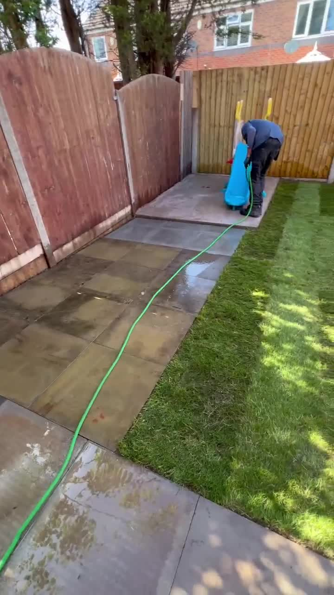
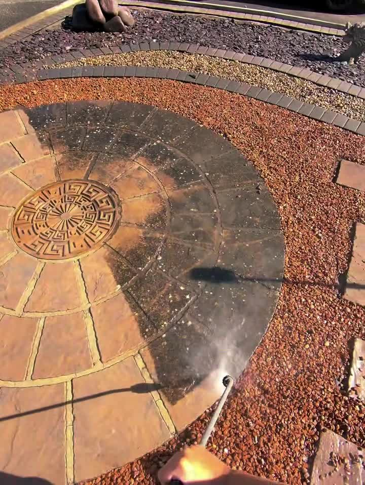
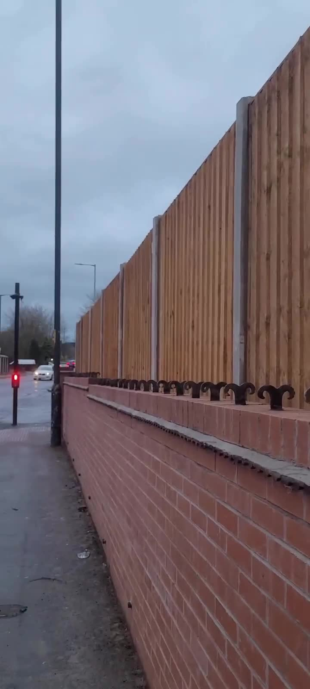
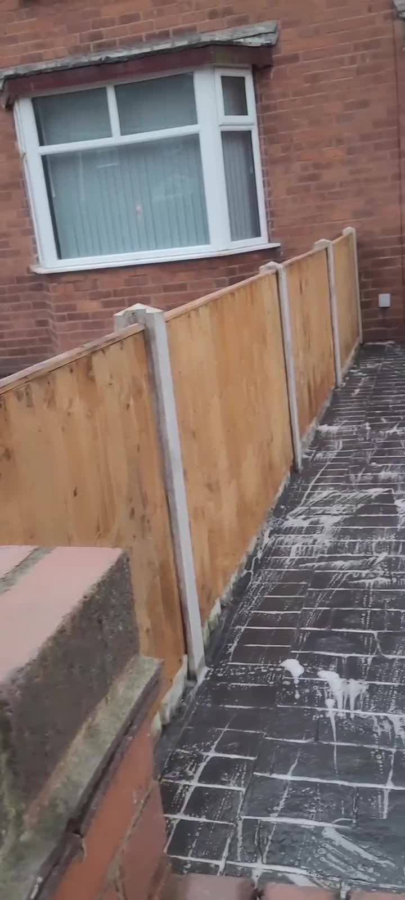
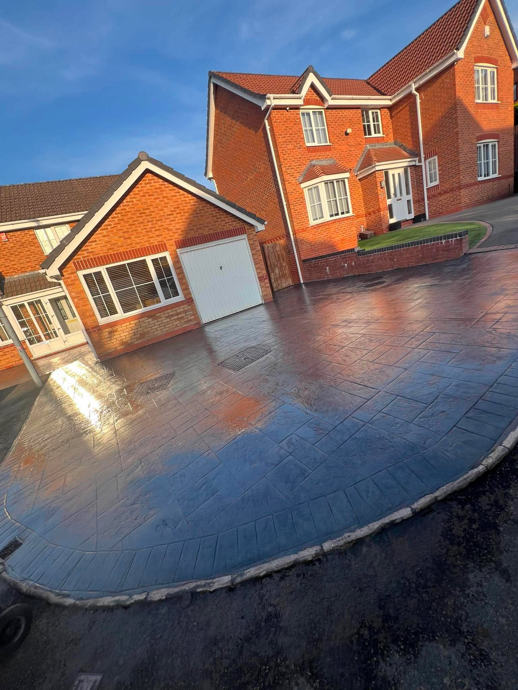

Fencing & Repairs
New fencing, replacement panels, repairs and general fence maintenance.
All aspects of property maintenance and fencing undertaken across Barnstaple, High Bickington and surrounding North Devon areas.
From fencing and garden maintenance to pressure washing and general repairs, HSF takes care of the jobs that keep your property looking its best.
New fencing, replacement panels, repairs and general fence maintenance.

Grass cutting, hedge trimming, tidy-ups and ongoing garden care.

Practical garden improvements and outdoor transformations tailored to your property.

Driveways, patios, paths and hard surfaces professionally cleaned.

General outdoor maintenance to keep the exterior of your home tidy and cared for.

Those smaller maintenance jobs around the property that still need doing properly.

HSF Property Maintenance offers a practical, friendly service for homeowners who want one point of contact for property, fencing and garden work.
A look at the type of fencing, landscaping, exterior cleaning and property maintenance HSF can undertake.


Call or WhatsApp HSF Property Maintenance. Based in High Bickington and covering Barnstaple and surrounding areas.
📍 Mill Road, High Bickington, Barnstaple, EX37 9AZ
Facebook: HSF Property Maintenance